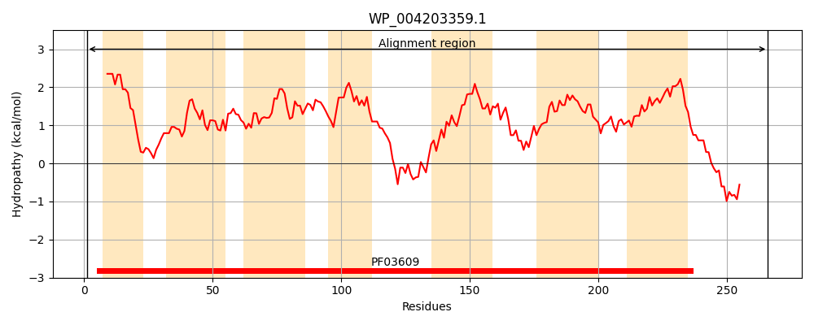
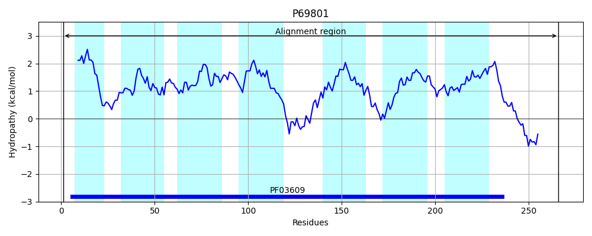
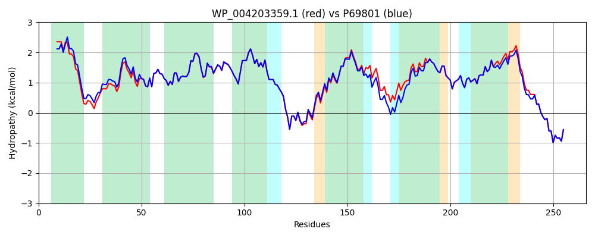

Hit Accession: P69801
Hit TCID: 4.A.6.1.1
Hit Description: gnl|BL_ORD_ID|11278 gnl|TC-DB|P69801|4.A.6.1.1 Mannose permease IIC component - Escherichia coli.
Mach Len: 266
e:0.000000
Query TMS Count : 7
Hit TMS Count: 7
TMS-Overlap Score: 7.200000
Predicted Substrates:CHEBI:17315;D-glucosamine, CHEBI:4162;2-amino-2-deoxy-D-glucopyranose, CHEBI:4207;aldehydo-D-mannosamine, CHEBI:4167;D-glucopyranose, CHEBI:4208;D-mannopyranose, CHEBI:4119;keto-D-fructose
BLAST Alignment:
Score: 1254 , Bit scores: 487 bits, E-value: 4.6e-177, Alignment length: 266, Percentage identity: 94
Query: 1 MEITLLQIVLVFIVACIAGMESVLDEFQFHRPLVACTLIGAVLGDMKTGIIIGGTLEMIALGWMNIGAAVAPDAALASIISTVLVIAGHQSIGAGIALAIPLAAAGQVLTIIVRTITVAFQHAADKAAENGNLTALSWLHVSSLFLQAMRIAIPAVIVAISVGTSEVQGLLNAIPEVVTSGLNIAGGMIVVVGYAMVINMMRAGYLMPFFYLGFVTAAFTNFNLVALGVIGAVMAILYIQLSPKYNRVAGAPAQAAGNNDLDNELD 266
MEIT LQIVLVFIVACIAGM S+LDEFQFHRPL+ACTL+G VLGDMKTGIIIGGTLEMIALGWMNIGAAVAPDAALASIIST+LVIAGHQSIGAGIALAIPLAAAGQVLTIIVRTITVAFQHAADKAA+NGNLTA+SW+HVSSLFLQAMR+AIPAVIVA+SVGTSEVQ +LNAIPEVVT+GLNIAGGMIVVVGYAMVINMMRAGYLMPFFYLGFVTAAFTNFNLVALGVIG VMA+LYIQLSPKYNRVAGAPAQAAGNNDLDNELD
Sbjct: 1 MEITTLQIVLVFIVACIAGMGSILDEFQFHRPLIACTLVGIVLGDMKTGIIIGGTLEMIALGWMNIGAAVAPDAALASIISTILVIAGHQSIGAGIALAIPLAAAGQVLTIIVRTITVAFQHAADKAADNGNLTAISWIHVSSLFLQAMRVAIPAVIVALSVGTSEVQNMLNAIPEVVTNGLNIAGGMIVVVGYAMVINMMRAGYLMPFFYLGFVTAAFTNFNLVALGVIGTVMAVLYIQLSPKYNRVAGAPAQAAGNNDLDNELD 266 | Protein Hydropathy Plots: |
|---|
|  |  |
Pairwise Alignment-Hydropathy Plot:
|
|---|
|  |